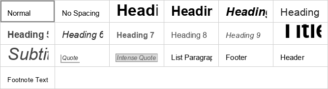
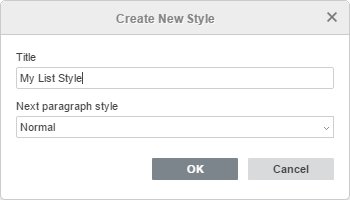
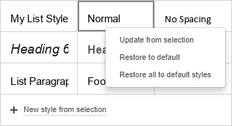
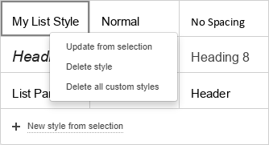

Primena stilova formatiranja
Svaki stil formatiranja je skup unapred definisanih opcija formatiranja (veličina fonta, boja, prored, poravnanje itd.). Stilovi u Document Editoru omogućavaju vam da brzo formatirate različite delove dokumenta (naslove, podnaslove, liste, običan tekst, citate), umesto da svaki put primenjujete pojedinačne opcije formatiranja. Ovo takođe obezbeđuje dosledan izgled celog dokumenta.
Stilove možete koristiti i za kreiranje tabele sadržaja ili tabele ilustracija.
Primena stila zavisi od toga da li je stil pasusa (normalan, bez razmaka, naslovi, lista pasus itd.) ili tekstualni stil (baziran na vrsti, veličini i boji fonta). Takođe zavisi i od toga da li je deo teksta označen ili je kursor miša postavljen na reč. U nekim slučajevima možda ćete morati da izaberete stil iz biblioteke dva puta da bi se primenio ispravno: kada prvi put kliknete na stil, primenjuju se svojstva stila pasusa. Kada kliknete drugi put, primenjuju se svojstva teksta.
Korišćenje podrazumevanih stilova
Da biste primenili jedan od dostupnih stilova formatiranja teksta,
- postavite kursor unutar željenog pasusa ili označite više pasusa,
- izaberite željeni stil iz galerije stilova sa desne strane na kartici Početna u gornjoj traci sa alatkama.
Dostupni su sledeći stilovi formatiranja: normalan, bez razmaka, naslov 1-9, naslov, podnaslov, citat, naglašeni citat, lista pasus, podnožje, zaglavlje, tekst fusnote.

Uređivanje postojećih stilova i kreiranje novih
Da biste promenili postojeći stil:
- Primenite željeni stil na pasus.
- Označite tekst pasusa i promenite sve parametre formatiranja koji su vam potrebni.
- Sačuvajte izvršene promene:
- kliknite desnim tasterom miša na izmenjeni tekst, izaberite opciju Formatiraj kao stil i zatim opciju Ažuriraj stil 'NazivStila' ('NazivStila' odgovara stilu koji ste primenili u koraku 1),
- ili označite izmenjeni deo teksta mišem, otvorite galeriju stilova, kliknite desnim tasterom miša na stil koji želite da izmenite i izaberite opciju Ažuriraj iz izbora.
Kada se stil izmeni, svi pasusi u dokumentu koji koriste taj stil promeniće izgled u skladu sa izmenama.
Da biste kreirali potpuno novi stil:
- Formatirajte deo teksta onako kako vam je potrebno.
- Izaberite odgovarajući način za čuvanje stila:
- kliknite desnim tasterom miša na izmenjeni tekst, izaberite opciju Formatiraj kao stil i zatim opciju Kreiraj novi stil,
- ili označite izmenjeni deo teksta mišem, otvorite galeriju stilova i kliknite na opciju Novi stil iz izbora.
- Podesite parametre novog stila u otvorenom prozoru Kreiraj novi stil:

- Navedite naziv novog stila u polju za unos teksta.
- Izaberite željeni stil za naredni pasus iz liste Stil narednog pasusa. Takođe je moguće izabrati opciju Isti kao kreirani novi stil.
- Kliknite na dugme OK.
Kreirani stil će biti dodat u galeriju stilova.
Upravljanje prilagođenim stilovima:
- Da biste vratili podrazumevana podešavanja određenog stila koji ste promenili, kliknite desnim tasterom miša na stil koji želite da vratite i izaberite opciju Vrati na podrazumevano.
- Da biste vratili podrazumevana podešavanja za sve stilove koje ste promenili, kliknite desnim tasterom miša na bilo koji podrazumevani stil u galeriji stilova i izaberite opciju Vrati sve na podrazumevane stilove.

- Da biste obrisali jedan od novih stilova koje ste kreirali, kliknite desnim tasterom miša na stil koji želite da obrišete i izaberite opciju Obriši stil.
- Da biste obrisali sve nove stilove koje ste kreirali, kliknite desnim tasterom miša na bilo koji novi stil i izaberite opciju Obriši sve prilagođene stilove.
